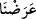

73. (Allah bu emâneti insana vermek sûretiyle), münâfık erkeklere ve münâfık
kadınlara, müşrik erkeklere ve müşrik kadınlara azap edecek, îman eden
erkeklerin ve îman eden kadınların da tevbesini kabul buyuracaktır. Allah
bağışlayandır, merhamet edendir.
Emâneti kabul ettikten sonra zâyi eden “münâfık erkeklere ve münâfık kadınlara”
emâneti doğrudan kabul etmeyerek emânete hıyânet eden “müşrik erkeklere ve müşrik
kadınlara azap edecek”
el-İrşâd’da der ki: Âyetteki bu ifade birinci zümreye işârettir. Yâni insan emâneti
yüklendi ki sonunda Allah Teâlâ emânete riâyet etmeyen ve ona tâatle mukabelede
bulunmayan insanların bazı ferdlerine azâb etsin. Bu mânâ (âyetin başındaki) “lâm”ın
âkıbet/sonuç için olmasına göredir. Allâh’ın emâneti yüklemekten maksadı azâb etmek
değilse de -sebebi belli maksadlara dayanan fiiller için o maksadların gerekli olması
gibi- insanların bazılarına nisbetle azâb gerektiği için burada azâb etmek, maksad
yerinde ifâde edilmiştir. Yâni insanın emâneti yüklenmesinin sonucu, emânete hıyânet
edip tamamen itâatten çıkan bu insanlara Allah Teâlâ’nın azâb etmesidir.
Bahru’l-ulûm’da der ki: “Lâm”ın önceki âyetteki “
(teklif ettik)” fiilinin illeti
olması da mümkündür. Yâni münâfıkların nifâkı, müşriklerin şirk koşmaları ortaya
çıksın da Allah onlara azâb etsin diye biz emâneti teklif ettik.
Emâneti koruyan ve hakkını gözeten “îmân eden erkeklerin ve îman eden kadınların
da tevbesini kabul buyuracaktır.”
el-İrşâd’da der ki: “Bu ifade ikinci zümreye işârettir. Yâni onların emâneti
yüklenmesinin sonucu olarak Allah Teâlâ’nın insanlardan bazı ferdlerin tevbelerini
kabul edecektir. Çünkü onlar hiç bir zaman boyunlarından tâat boyunduruğunu
çıkarmadılar. İşledikleri kusur ve hatâları telâfî ettiler. Zâten insan yaratılışının
hükmüyle hata ve günahlardan pek az uzak kalır. Yine bu kimseler, tevbe ve inâbe ile
günah ve hatâlarını düzeltirler.”
Âyette ilk olarak geçen ism-i celîl (Allah ismi), azabdan korkutmak ve mehâbet
terbiyesi içindir. Âyette Allah isminin ikinci olarak geçtiğinde zamir kullanılacak yerde
açık isim zikredilmesi, vaad ve vaîd makamlarından her birine hakkını tam olarak
vermek üzere mü’minlerin durumuna fazlasıyla îtinâ gösterildiğini ibraz etmek içindir.
“Allah bağışlayandır, merhamet edendir.” Mağfiret ve rahmeti fazla olandır. Çünkü
onların tevbesini kabul etmiş, hatâlarını bağışlamış ve tâatlerine karşılık onları
kurtuluşla ödüllendirmiştir.
et-Te’vîlâtü’n-Necmiyye’de şöyle denilmiştir: “
deki “lâm” sayrûret (olma, bir
halden başka bir hâle geçme) ve akıbet (sonuç) bildirmek içindir. Allah Teâlâ emânetin
teklif edilmesindeki hikmetin, yaratılmışların bu emânet konusunda üç tabaka olmaları
olduğuna işâret etmektedir:
Birinci tabaka, meleklerden ve başka varlıklardan emâneti yüklenmeyip bu konuda
sevabı ya da cezâsı olmayanlardır.